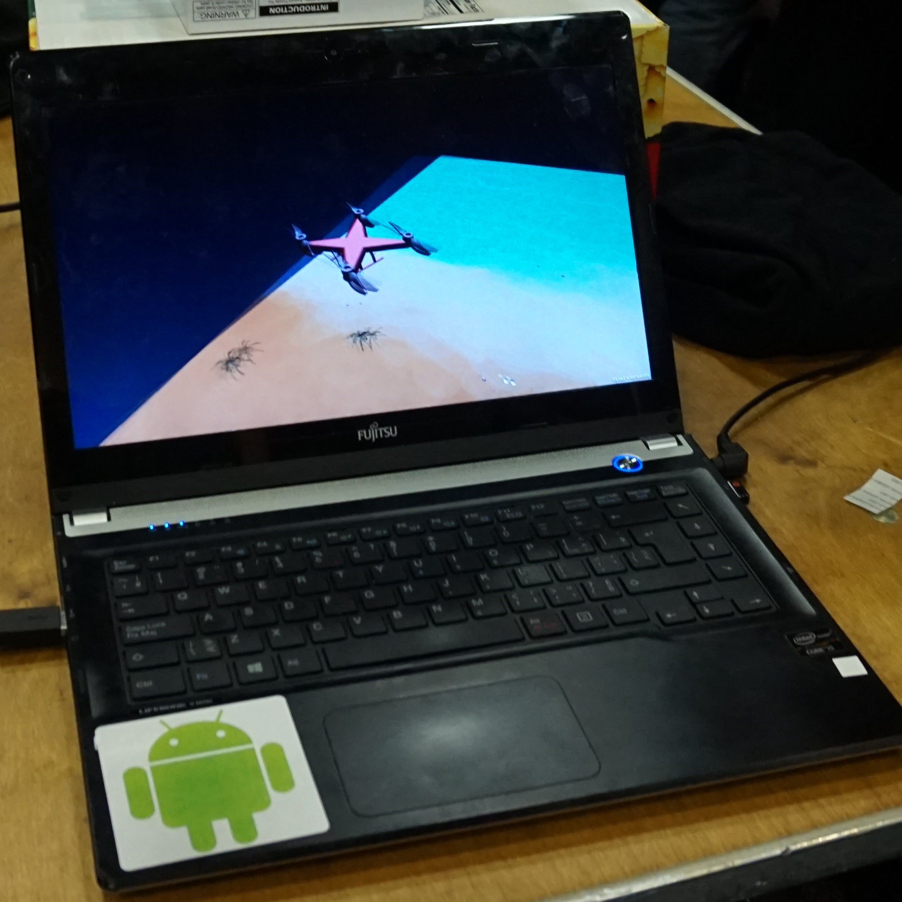

My Role
What excited me about this project was the opportunity to apply my mechanical design and simulation expertise to develop a fundamental simulator. The project involved designing models using Autodesk Inventor and applying textures through Blender. Significantly, this endeavor marked my inaugural collaboration within a team dedicated to a purely software-based application. This experience underscored the importance of creating modular code for efficient development. Moreover, my team and I had the privilege of being mentored by seasoned software developers from Microsoft, providing invaluable insights into the intricacies of the Kinect sensor.

Knowledge, Skills and Abillities
- CAD
- UNITY
- Microsoft Kinect
Goals, Success Factors
- Have a complete project
Challenges
- Working with the Kinect
- Understanding how to work with skeleton data